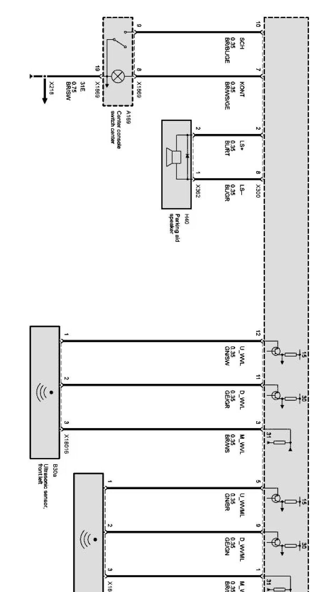
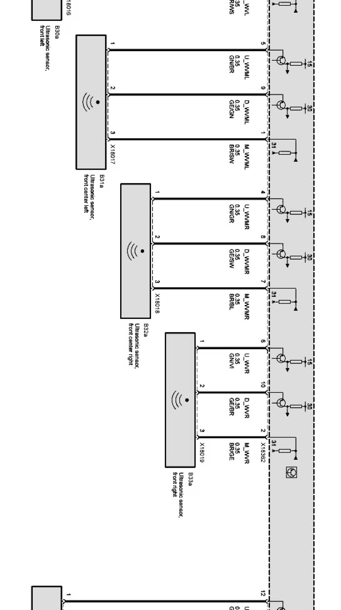
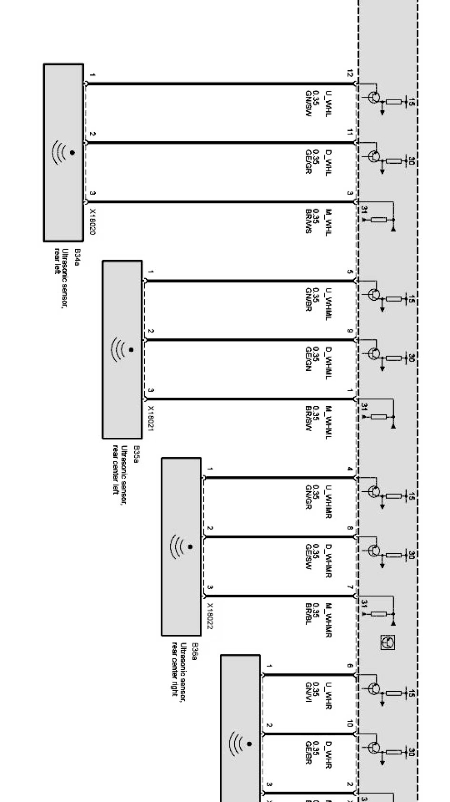
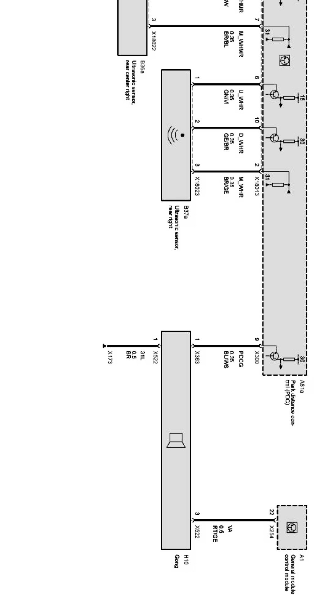

Operation CHARM
: Car repair manuals for everyone.
Home
>>
BMW
>>
2007
>>
X3 3.0si (E83) L6-3.0L (N52K)
>>
Repair and Diagnosis
>>
Diagrams
>>
Electrical Diagrams
>>
Body
>>
Signal and Warning Functions
>>
Parking Aid (PDC)
>>
(PDC) (X Series_X3-E83 Without Japan Model As of 09/05)
(PDC) (X Series_X3-E83 Without Japan Model As of 09/05)
Park distance control (PDC) Part 1:

Park distance control (PDC) Part 2:

Park distance control (PDC) Part 3:

Park distance control (PDC) Part 4:
